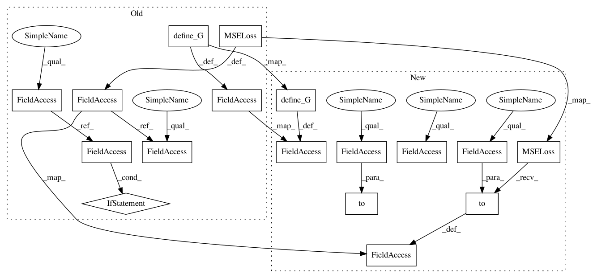

cbc51f8495a8d5e314cd1ae0704f32a4e3dc28b1,codes/models/SRGAN_model.py,SRGANModel,__init__,#SRGANModel#,17
Before Change
train_opt = opt["train"]
// define networks and load pretrained models
self.netG = networks.define_G(opt) // G
if self.is_train:
self.netD = networks.define_D(opt) // D
self.netG.train()
self.netD.train()
self.load() // load G and D if needed
// define losses, optimizer and scheduler
if self.is_train:
// G pixel loss
if train_opt["pixel_weight"] > 0:
l_pix_type = train_opt["pixel_criterion"]
if l_pix_type == "l1":
self.cri_pix = nn.L1Loss()
elif l_pix_type == "l2":
self.cri_pix = nn.MSELoss()
else:
raise NotImplementedError("Loss type [%s] is not recognized." % l_pix_type)
self.l_pix_w = train_opt["pixel_weight"]
else:
print("Remove pixel loss.")
self.cri_pix = None
// G feature loss
if train_opt["feature_weight"] > 0:
l_fea_type = train_opt["feature_criterion"]
if l_fea_type == "l1":
self.cri_fea = nn.L1Loss()
elif l_fea_type == "l2":
self.cri_fea = nn.MSELoss()
else:
raise NotImplementedError("Loss type [%s] is not recognized." % l_fea_type)
self.l_fea_w = train_opt["feature_weight"]
else:
print("Remove feature loss.")
self.cri_fea = None
if self.cri_fea: // load VGG perceptual loss
self.netF = networks.define_F(opt, use_bn=False)
// GD gan loss
self.cri_gan = GANLoss(train_opt["gan_type"], 1.0, 0.0)
self.l_gan_w = train_opt["gan_weight"]
self.D_update_ratio = train_opt["D_update_ratio"] if train_opt["D_update_ratio"] else 1
self.D_init_iters = train_opt["D_init_iters"] if train_opt["D_init_iters"] else 0
if train_opt["gan_type"] == "wgan-gp":
self.random_pt = torch.Tensor(1, 1, 1, 1).to(self.device)
// gradient penalty loss
self.cri_gp = GradientPenaltyLoss(tensor=self.Tensor)
self.l_gp_w = train_opt["gp_weigth"]
if self.use_gpu:
if self.cri_pix:
self.cri_pix.cuda()
if self.cri_fea:
self.cri_fea.cuda()
self.cri_gan.cuda()
if train_opt["gan_type"] == "wgan-gp":
self.cri_gp.cuda()
After Change
train_opt = opt["train"]
// define networks and load pretrained models
self.netG = networks.define_G(opt).to(self.device) // G
if self.is_train:
self.netD = networks.define_D(opt).to(self.device) // D
self.netG.train()
self.netD.train()
self.load() // load G and D if needed
// define losses, optimizer and scheduler
if self.is_train:
// G pixel loss
if train_opt["pixel_weight"] > 0:
l_pix_type = train_opt["pixel_criterion"]
if l_pix_type == "l1":
self.cri_pix = nn.L1Loss().to(self.device)
elif l_pix_type == "l2":
self.cri_pix = nn.MSELoss().to(self.device)
else:
raise NotImplementedError("Loss type [%s] is not recognized." % l_pix_type)
self.l_pix_w = train_opt["pixel_weight"]
else:
print("Remove pixel loss.")
self.cri_pix = None
// G feature loss
if train_opt["feature_weight"] > 0:
l_fea_type = train_opt["feature_criterion"]
if l_fea_type == "l1":
self.cri_fea = nn.L1Loss().to(self.device)
elif l_fea_type == "l2":
self.cri_fea = nn.MSELoss().to(self.device)
else:
raise NotImplementedError("Loss type [%s] is not recognized." % l_fea_type)
self.l_fea_w = train_opt["feature_weight"]
else:
In pattern: SUPERPATTERN
Frequency: 3
Non-data size: 17
Instances
Project Name: xinntao/BasicSR
Commit Name: cbc51f8495a8d5e314cd1ae0704f32a4e3dc28b1
Time: 2018-06-16
Author: wxt1994@126.com
File Name: codes/models/SRGAN_model.py
Class Name: SRGANModel
Method Name: __init__
Project Name: xinntao/BasicSR
Commit Name: cbc51f8495a8d5e314cd1ae0704f32a4e3dc28b1
Time: 2018-06-16
Author: wxt1994@126.com
File Name: codes/models/SFTGAN_ACD_model.py
Class Name: SFTGAN_ACD_Model
Method Name: __init__
Project Name: xinntao/BasicSR
Commit Name: cbc51f8495a8d5e314cd1ae0704f32a4e3dc28b1
Time: 2018-06-16
Author: wxt1994@126.com
File Name: codes/models/SR_model.py
Class Name: SRModel
Method Name: __init__